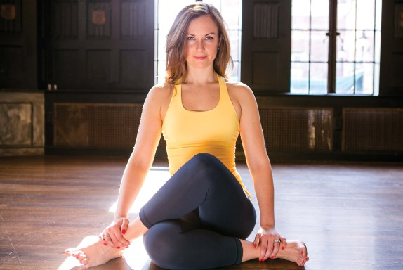

What the mind can conceive the Body can Achieve!
Upon graduating from the University of Michigan with a degree in architecture, Rebecca moved to San Francisco to pursue a new career in the design field. It was 2003 in San Francisco where she began her hatha yoga practice and took her first Bikram yoga class. She found a new passion; a passion for her own self awareness and self-realization. This commenced her journey; transforming her life of design into a life of healing and helping others. In the spring of 2006, Rebecca graduated from the 500+ Hour teacher training course at Bikram's College of India Headquarters in Los Angeles. Rebecca is also certified in PyroPilates method. She is forever grateful and honored to have also been mentored by the world renown yoga teacher, Mary Jarvis. Rebecca approaches both teaching and her own practice with compassion, passion, and dedication. She is known for her encouraging and optimistic style of teaching that incorporates both the physical and mental aspects of the yoga practice. Her positive attitude in and out of the yoga studio is contagious. Rebecca has had the opportunity to travel and share her passion throughout the United States, as well as Europe. Her dedication to her practice has helped her to place 1st in the PA Regional Asana Cup '11/12 & 13/14, 7th in the USA National Asana Cup '11/12, 10th in the International Bishnu Ghosh Asana Cup '09/10, and 1st in The Netherlands Asana Cup '09/10. The Asana Sport Championship is an opportunity she uses to motivate herself in her personal practice as well as inspire others to seek the best in themselves. Rebecca is also the Founder of the Pittsburgh Yoga Expo. "What the mind can conceive, the body and mind can achieve." Rebecca recently became a mother. She practiced yoga throughout her pregnancy up until she gave birth.